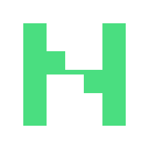

وایرفریم با رنگ و توکن واقعی · دادههای نمونه · بدون اتصال به موتور و اجرای فرمان
قاعدهٔ تعامل:
برای منطق، حالتهای خطا و معیار پذیرش، سند صفحهبهصفحه را بخوانید.

Onboard Harness · پانزده صفحه و زیرنما · نسخهٔ محلی
وایرفریم با رنگ و توکن واقعی · دادههای نمونه · بدون اتصال به موتور و اجرای فرمان